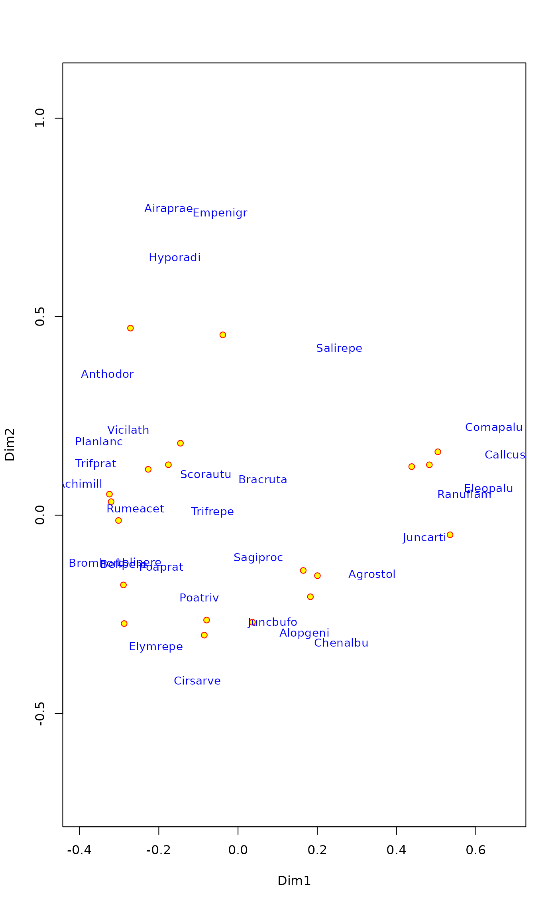
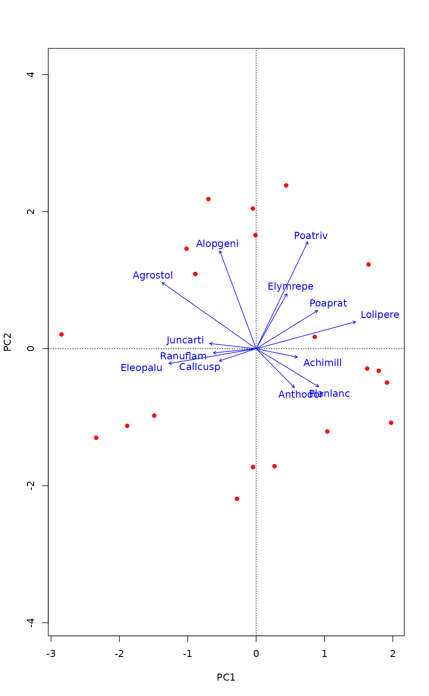

Alternative plot and identify Functions for Ordination
ordiplot.RdFunction ordiplot is an alternative plotting
function which works with any vegan ordination object and many
non-vegan objects. In addition, plot functions for
vegan ordinations return invisibly an "ordiplot" object,
and this allows using ordiplot support functions with this
result: identify can be used to add labels to selected site,
species or constraint points, and points and text can
add elements to the plot, and used in a pipe to add scores into plot
by layers.
Usage
ordiplot(ord, choices = c(1, 2), type="points", display, optimize = FALSE,
arrows = FALSE, length = 0.05, arr.mul, xlim, ylim, ...)
# S3 method for class 'ordiplot'
points(x, what, select, arrows = FALSE,
length = 0.05, arr.mul, ...)
# S3 method for class 'ordiplot'
text(x, what, labels, select, optimize = FALSE,
arrows = FALSE, length = 0.05, arr.mul, bg, ...)
# S3 method for class 'ordiplot'
identify(x, what, labels, ...)Arguments
- ord
A result from an ordination.
- choices
Axes shown.
- type
The type of graph which may be
"points","text"or"none"for any ordination method.- display
Display only "sites" or "species". The default for most methods is to display both, but for
cca,rda,dbrdaandcapscaleit is the same as inplot.cca.- xlim, ylim
the x and y limits (min,max) of the plot.
- ...
Other graphical parameters.
- x
A result object from
ordiplot.- what
Items identified in the ordination plot. The types depend on the kind of plot used. Most methods know
sitesandspecies, functionsccaandrdaknow in additionconstraints(for LC scores),centroids,biplotandregression, andplot.procrustesordination plot hasheadsandpoints.- labels
Optional text used for labels. Row names of scores will be used if this is missing.
- optimize
Optimize locations of text to reduce overlap and plot point in the actual locations of the scores. Uses
ordipointlabel.- arrows
Draw arrows from the origin. This will always be
TRUEfor biplot and regression scores in constrained ordination (ccaetc.). Setting thisTRUEwill draw arrows for any type of scores. This allows, e.g, using biplot arrows for species. The arrow head will be at the value of scores, and possible text is moved outwards.- length
Length of arrow heads (see
arrows).- arr.mul
Numeric multiplier to arrow lenghts; this will also set
arrows = TRUE. The default is to automatically adjust arrow lengths with"biplot"and"regression"scores and else use unmodified scores.- bg
Background colour for labels. If
bgis set, the labels are displayed withordilabelinstead oftext.- select
Items to be displayed. This can either be a logical vector which is
TRUEfor displayed items or a vector of indices of displayed items.
Details
Function ordiplot draws an ordination diagram with default of
black circles for sites and red crosses for species. It returns
invisibly an object of class ordiplot.
The function can handle output from several alternative ordination
methods. For cca, rda and
decorana it uses their plot method with option
type = "points". In addition, the plot functions of
these methods return invisibly an ordiplot object which can
be used by identify.ordiplot to label points. For other
ordinations it relies on scores to extract the scores.
For full user control of plots, it is best to call ordiplot
with type = "none" and save the result, and then add sites and
species using points.ordiplot or text.ordiplot which
both pass all their arguments to the corresponding default graphical
functions. Alternatively, points and text can be used in
pipe which allows an intuitive way of building up plots by layers. In
addition, function ordilabel and
ordipointlabel can be used in pipe after ordiplot
or other vegan ordination plot commands. See Examples.
Value
Function ordiplot returns invisibly an object of class
ordiplot with used scores. In general, vegan plot
functions for ordination results will also return an invisible
ordiplot object. If the plot(..., type = "n") was used
originally, the plot is empty, and items can be added with the
invisible object. Functions points and text return
their input object without modification, which allows chaining these
commands with pipes. Function identify.ordiplot uses this
object to label the point.
See also
With argument bg function calls ordilabel
to draw text on non-transparent label, and with argument
optimize = TRUE function calls ordipointlabel to
optimize the locations of text labels to minimize
over-plotting. Functions ordilabel and
ordipointlabel can be used in a pipe together with
ordiplot methods text and points. Function
plot.cca uses ordiplot methods text and
points in configurable plots, and these accept the
arguments of the ordiplot methods described here.
Examples
## Draw a plot for a non-vegan ordination (cmdscale).
data(dune)
dune.dis <- vegdist(wisconsin(dune))
dune.mds <- cmdscale(dune.dis, eig = TRUE)
dune.mds$species <- wascores(dune.mds$points, dune, expand = TRUE)
pl <- ordiplot(dune.mds, type = "none")
points(pl, "sites", pch=21, col="red", bg="yellow")
text(pl, "species", col="blue", cex=0.9)

## same plot using pipes (|>)
ordiplot(dune.mds, type="n") |>
points("sites", pch=21, col="red", bg="yellow") |>
text("species", col="blue", cex=0.9)
## Some people think that species should be shown with arrows in PCA.
## Other ordination methods also return an invisible ordiplot object and
## we can use pipes to draw those arrows.
mod <- rda(dune)
plot(mod, type="n") |>
points("sites", pch=16, col="red") |>
text("species", arrows = TRUE, length=0.05, col="blue")

## Default plot of the previous using identify to label selected points
if (FALSE) { # \dontrun{
pl <- ordiplot(dune.mds)
identify(pl, "spec")} # }